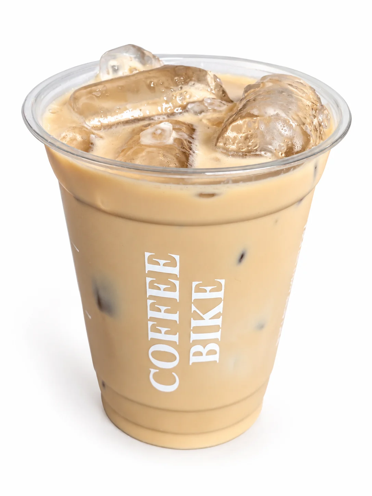
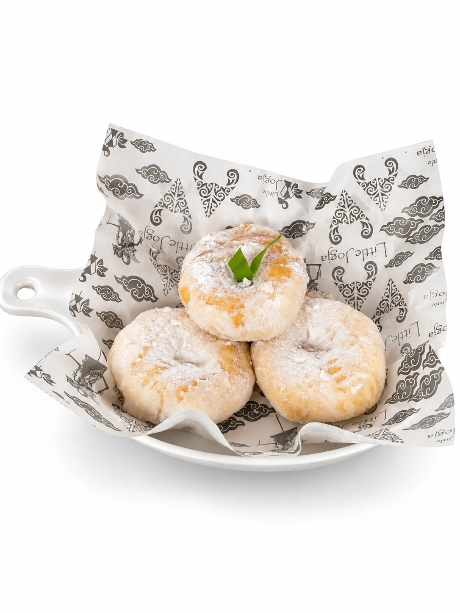

JAKARTA · EST. 2021
Ngopi, makan, kerja, atau kumpul bareng—ada ruang untuk caramu menikmati hari.
FIG. 01 — COFFEE BIKE, EST. 2021
Since 2021 · Jakarta
Coffee Bike adalah tempat nongkrong yang cozy dan nyaman untuk menikmati kopi, menyantap makanan, berkumpul bersama teman, bekerja, maupun berkegiatan bersama.
Lewat konsep Little Jogja, coffee shop modern bertemu dengan kuliner tradisional Indonesia.
your space, your pace ♡A little something for everyone
Menu pilihan Coffee Bike — dinikmati di tempat, bersama teman, atau sambil menyelesaikan pekerjaan.

Bumbu rujak dari cabai merah, tomat, bawang merah, dan bawang putih. Disajikan bersama sambal bawang.

Camilan berbahan dasar kentang dengan taburan gula halus.
Tradition meets today
Perpaduan masakan tradisional Indonesia dan pendekatan coffee shop modern. Rasa akrab, dinikmati dengan cara yang santai.
Make yourself at home
Area untuk bekerja, belajar, dan menyelesaikan pekerjaan.
Ruang multifungsi untuk kegiatan kelompok hingga 30 orang.
Ruang privat untuk kebutuhan khusus.
Untuk presentasi dan berbagai kegiatan.
Hiburan musik untuk menemani waktu di Coffee Bike.
Koneksi internet untuk kebutuhan kerja dan aktivitas digital.
Coffee Bike, up close
Coffee, food,
and time together.
Your space,
your pace.
Come by, stay a while
Jam weekend berlanjut hingga dini hari berikutnya.
Coffee Bike · Jakarta Barat